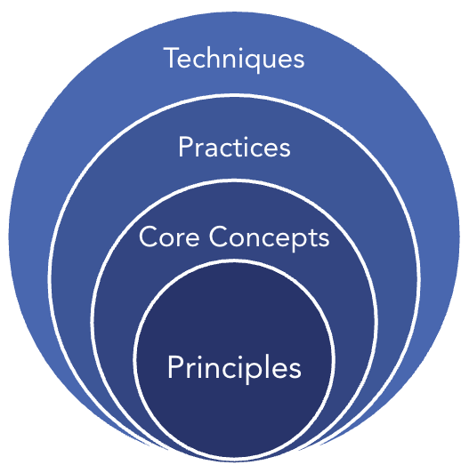
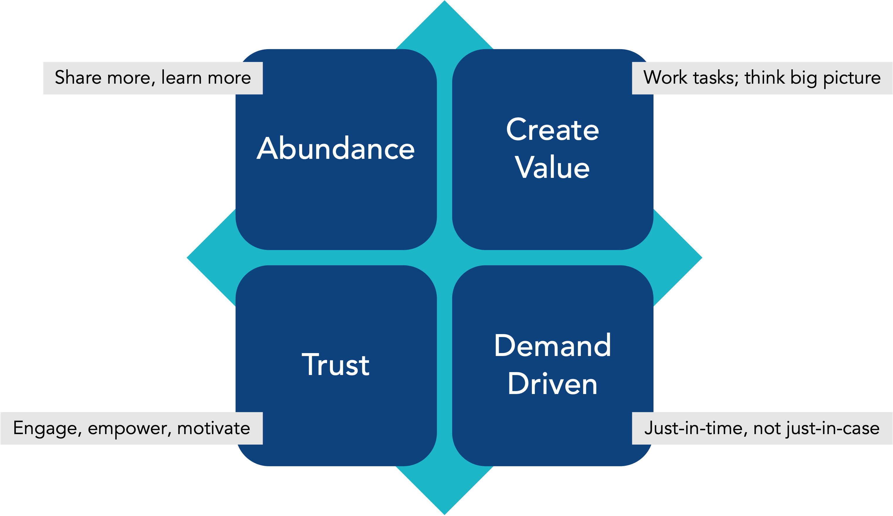

出典: Consortium for Service Innovation, KCS Principles and Core Concepts — CC BY-NC-ND 4.0（原文を日本語に翻訳し、ページを章ごとにまとめ直したもの） 元のページ:
- KCS Principles and Core Concepts
- KCS Principles
- Abundance
- Create Value
- Demand Driven
- Trust
- KCS Core Concepts
- 1) Transformation and Continuous Improvement
- 2) Buy-In At All Levels
- 3) Leadership is Required
- 4) Collective Experience
- 5) Collective Ownership
- 6) Seek to Understand Before Seeking to Solve
- 7) Sufficient to Solve
- 8) Knowledge Integration
- 9) Coaching for Success
- 10) Assess Value
原則とコアコンセプトは、Knowledge-Centered Success（KCS）の土台を形作っている。
KCSは、ナレッジの利用・検証・改善・作成をワークフローに組み込むための、実績のある方法論である。この方法論には、実際に仕事をしている人たちの経験と、ナレッジの再利用から浮かび上がるパターンに基づく継続的改善が本来的に備わっている。KCSは、少数の人のナレッジを多数の人が使うという考え方に立つ、従来のナレッジエンジニアリングの手法とは異なる。KCSは多対多のモデルである。KCSの洗練された点は、需要主導であり、自己修正的であることにある。それは、KCSがダブルループ学習という学術的な概念に基づいているからである。

図：KCSの構成。中心から原則（Principles）、コアコンセプト（Core Concepts）、プラクティス（Practices）、テクニック（Techniques）の順に外側へ広がる。
KCSは、情報やナレッジを多く扱うあらゆる事業に、非常に大きな価値を生み出す。4つの基本的な原則と10個のコアコンセプトが、KCSの土台を形作っている。KCSのプラクティスは規範的に見えるかもしれないが、そこに挙げたテクニックは、この方法論の導入に成功した組織のやり方を例として示したものである。これらのテクニックは、KCSを導入する唯一の方法だと誤解されることがある。しかし実際には、原則・コアコンセプト・プラクティスを実践する方法はたくさんある。テクニックは、KCSが現場レベルでどう機能するかの一例であり、KCSで成功する唯一の方法ではない。
実現する効果を最大にしたいなら、KCSの基本的な原則とコアコンセプトは譲れないものである。原則とコアコンセプトは、あるプラクティスやテクニックがKCSの意図に沿っているかどうかを判断する指針になる。組織はKCSを取り入れる過程で、ある種の課題にどう取り組むかを決めなければならない。その中には、その組織の環境に固有のものもあるだろう。原則とコアコンセプトは、個々のプラクティスやテクニックがKCSの考え方にどれだけ沿っているかを確かめるための基準である。
KCSの原則は、複数のプラクティスにまたがって当てはまる。原則は複数のプラクティスの基礎となり、それらのプラクティスの中に現れる。原則は、何かをどのように行うかを教えるものではない。私たちがなぜそうするのかを教えるものである。
KCSの方法論には、4つの基礎となる原則がある。

図：KCSの4つの原則。豊かさ（Abundance）：多く共有するほど、多く学ぶ／価値を生む（Create Value）：作業はタスク単位で、思考は全体像で／信頼（Trust）：関与させ、権限を与え、意欲を引き出す／需要主導（Demand Driven）：「念のため」ではなく「必要なときに必要なだけ」。
過去100年のビジネスモデルは、製品が有形である製造業の世界を前提に発展してきた。製品とは、手で触れることのできる物理的なものだった。有形のものには限りがあるため、希少性を前提に動く。私がリンゴを持っていてあなたが持っていなければ、私はそれをあなたにあげることができる。そうすればあなたがリンゴを持ち、私は持っていない状態になる。あるいは、リンゴをあなたと分け合うこともできる。半分をあなたにあげれば、2人ともリンゴ1個分より少なくなる。ナレッジは無形のものなので、希少性の性質に縛られない。私があなたにアイデアを共有しても、共有する前より私のアイデアが減るわけではない。それどころか、私がアイデアを共有すれば、あなたが別のアイデアや視点を出して元のアイデアを深めてくれるかもしれない。そうなれば、2人とも最初より多くを手にしている。愛情も、豊かさの原則で動くもう1つの無形のものである。初めての子どもを持った夫婦を考えてみよう。2人はその子に強い感情的なつながりを感じている。2人目、3人目の子どもが生まれたとき、2人目を愛するために1人目への愛情を減らし、3人目を愛するためにさらに減らさなければならないだろうか。
ナレッジは豊かさの原則で動く。多く共有するほど、多く学ぶ。ナレッジはやり取りや経験の副産物であり、やり取りを終えたときに、始める前よりナレッジが減っている人はいない。豊かさは、ビジネスにとって強力で、既存のあり方を揺るがす原則である。オープンソースソフトウェアがビジネスにもたらした成功と影響は、私たちがビジネスモデルを考え直し、どんなときに希少性の原則が理にかなっていて、どんなときに豊かさの原則が理にかなっているのかを、もっと慎重に考えなければならないことを示す一例である。これは二者択一ではなく、「両方」の話である。
KCSは、ナレッジを作成し維持するのに最もふさわしいのは、それを毎日使っている人たち、つまりナレッジワーカーである、という信念に基づいている。KCSに関わるナレッジワーカーの層が広いほど、ナレッジベースは豊かになり、使われるナレッジの質も高くなる。
豊かさの原則はKCSの多くのプラクティスに現れるが、特に重要なのが評価・表彰の領域である。健全なナレッジの実践には数多くのスキルが必要だと認めるなら、それぞれのスキルにおける個人の力量を評価しなければならない。豊かさのモデルに基づいて設計された表彰制度は、一人ひとりの強みと才能が、その人の貢献に基づいて確実に認められるようにする。同僚との比較ではなく、価値を生み出す力に基づいて、その人が得意なことを評価しよう。私たちの業績評価や表彰のモデルの多くは、恣意的な希少性のモデルに基づいている。その顕著な例が、相対順位付け（スタックランキング）、リーダーボード、競争的な環境を生む総合スコアの算出といった慣行である。KCSは協働的な環境でしか成功しない。人によって得意なことが多様であると認めることで、それぞれが得意なことをもっと行うよう促すことができる。
あらゆる職能と業界のあらゆる種類のナレッジワーカーには、共通点がある。その「製品」がナレッジであるということだ。問題の解決策を届けるサポートの専門家であれ、要件を届けるプロダクトマネージャーであれ、従業員が福利厚生の選択肢を選ぶのを手助けする人事アドバイザーであれ、規制要件について助言する法務担当であれ、誰もが、人が物事を成し遂げるのに必要な情報を提供している。言い換えれば、ナレッジを届けているのである。
ナレッジワーカーは忙しい。依頼に応え、質問に答え、さまざまな種類の成果物を、しばしば多くのチャネルで作っている。絶え間なく続くタスクの流れに埋もれて、学んだことを組織全体の利益になる形で記録するという大切な仕事がおろそかになりやすい。KCSは、ナレッジベースの利用をナレッジワーカーのワークフローに組み込む。KCSが成功するのは、ナレッジベースのナレッジ記事を再利用し、改善し、作成することが、ナレッジワーカーの習慣になったときである。こうしたKCSの活動が習慣になると、手戻りが減り、再利用されるナレッジ記事の質が上がる。KCSのプラクティスが適切に実践されていれば、タスクの処理時間は増えない。ここにこの方法論の洗練された点がある。
ナレッジはさまざまな形で、さまざまな場所に存在し、そのどれもが組織にとって価値を持ちうる。KCSはあらゆる形のナレッジに役立つ。KCSのテクニックは、わかっていることを再利用・改善し、新しいことを記録することに焦点を当てている。これは仕事を進める中で行われる。KCSは、技術文書、設計文書、人事規程、規制当局への届出書類、その他の資料といったコンテンツを置き換えるのではなく、補うものである。KCSによって、組織は、単に経験に基づくナレッジと、リスクの高いプロセス・社内規程・規制上や法律上の要件といったコンプライアンス上の必要があるナレッジとを区別できる。KCSは、すべてのナレッジが重要度と影響の点で等しいわけではないと認めており、組織がナレッジの種類ごとの要件に応じて適切な統制の仕組みを導入できるようにしている。
ナレッジはやり取りや経験の副産物である。ナレッジは使われるコンテキストの中で記録するのが最もよい。ナレッジを作成し維持するのに最もふさわしいのはそれを毎日使っている人たちだと私たちが言うのは、このためである。「その場で記録する」というこの考え方には、もう1つ利点がある。私たちが知っていることの大部分は暗黙知、つまり、知ってはいるが、誰かに尋ねられるまで自分が知っていると気づいていないことだからである。形式知とは、需要やコンテキストが無くても言葉にできる、私たちが知っていることである。
ナレッジについて詳しくは、KCS Practices Guide の The Attributes of Knowledge を参照のこと。
ナレッジマネジメントの話をすると、いくつかの疑問が出てくる。
KCSの方法論は、これらの疑問には需要に答えさせよう、と提案する。私たちは、仕事を進める中で出てくる課題に対応したい。わかっていることは再利用し、新しいことは記録したい。まだ起きていない課題を想像したり、予想したり、でっち上げたりはしたくない。この考え方は、自律システムやシステム思考の分野で行われてきた学術研究によって裏付けられている。それらの研究は、こうしたシステムはシステム内の出来事と行為者によって影響を受け、その結果として自己最適化する、という考え方に焦点を当てている。
先回りして動きたいと思っても、関連する過去の経験が無ければ、私たちは一般に未来を予測するのが得意ではない。過去の経験があってさえ、成功率はかなり低い。未来の出来事を予測できないと認めるなら、次善の策は、察知して対応することに本当に長けることである。需要主導の原則は、私たちが何に注力するかは、私たちがサービスを提供する相手の必要（需要）によって決まるべきだと提案する。どのナレッジを記録すべきか、どのナレッジに価値があるかは需要が教えてくれる。そしてナレッジの再利用によって、Solve Loopの中でそのナレッジが検証される。Evolve Loopでは、ナレッジの再利用のパターンが、組織の効率を高める予測的・予防的な能力を育てるのに役立つ。再利用のパターンは、ナレッジワーカーの集合的な経験に基づいて、事業を劇的に改善しうる、機能・プロセス・方針の影響の大きい改善点を見つけるのにも役立つ。
これは、組織とプロセスについての非常に異なる考え方である。私たちのビジネス慣行の多くが、過去100年にわたって製造業や生産ラインを管理してきた結果として発展してきたことには、すでに少し触れた。これらは歴史的に決定論的なシステムだった。製造のモデルでは、望ましい結果（製品）と、その結果を生み出すのに必要な資源とスキルがわかっている。製造工程では、ばらつきを最小にし、生産量を最大にするため、あらかじめ決められたプロセスと資源を、指揮統制型のモデルの中で使う。問題解決は非決定論的なプロセスである。新しい課題を解決したときの結果は、その性質上わかっておらず、それを解決するのにどんなプロセスや資源が必要になるかもわからない。非決定論的なモデルで必要となるプロセスと資源は、状況のコンテキストに応じて立ち現れてくるものである。状況について多くを知るにつれて、取り組み方も必要な資源も変わっていく。
KCSは、「念のため」の行動ではなく、「必要なときに必要なだけ」の行動に基づいている。あるやり取りが将来どれだけの価値を持つかを予測するのは非常に難しい。私たちは経験（ナレッジ）を記録し、そのうえで、価値のあるナレッジへと需要に私たちの注意を導かせたい。これがKCSのモデルの洗練された点、あるいは効率の良さの一部である。私たちは、ナレッジ記事を再利用し、改善し、まだ無ければ作成することによって、目の前の課題を解決したい。決して再利用されないナレッジのレビューや改善に時間を費やすことはしない。再利用されるナレッジは、需要に基づき、再利用を通じて検証される。再利用はレビューである。ナレッジを検証するのに最もふさわしいのは、それを毎日使っている人たちである。
信頼の力は非常に大きい。信頼は、意欲と熱意を持ってナレッジワークに取り組むための前提条件である。信頼があれば、人はより良い仕事を、より多く行う。信頼が無ければ、それは大きな機能不全の原因になる。
信頼とは、人が良い判断を下せると私たちがどの程度信じているかである。正しい情報と、組織の目的とブランドプロミスへの理解が与えられれば、人はその状況に応じて正しいことをするだろう、と信じることである。
信頼はさまざまな形で現れる。
健全なナレッジ中心の環境であるためには、答えはすべて「はい」でなければならない。
信頼は相互的なものである。つまり、信頼は信頼を生む。私があなたを信頼していることを示せば、あなたも私を信頼してくれる可能性が高くなる。組織のプロセスの多くは、チームで最も成績の低い人に合わせて設計されている。不信を前提に設計されているのである。それによって最も弱い従業員が与える損害は最小限に抑えられるかもしれないが、能力のある人たちの意欲も削いでしまう。最も優れた人たちが創造的な形で貢献する力を最小限にしてしまう。KCSのライセンスモデルは、一貫して良い判断を下せる力を示し、コンテンツ標準とワークフローのモデルを理解している人が、高い自律性を持って貢献できるようにする。それは、その人たちが正しいことをする能力への信頼を表している。
信頼は、プロセスを信じることにも関わる。私たちの集合的な経験を活かすための適切な仕組みが整っていて、入手できる最善の情報に適切なタイミングでアクセスできるようにしてくれる、と信じることである。ナレッジワーカーは、ナレッジベースへの自分の貢献が認められると信頼できなければならない。さらに、ナレッジワーカーの意欲を持続させるには、組織が、彼らの貢献がもたらした影響を常に見えるようにしておく必要がある。
信頼は、築くのに何週間も何か月もかかり、壊れるのは一瞬、というものの1つである。信頼は組織のトップから始まる。信頼に基づく環境や文化を作るのは、経営層の責任である。経営層が組織の目的・ビジョン・価値観・ブランドプロミスを定義し、言葉にして伝えるとき、そのメッセージは時間がたっても一貫していなければならない。さらに重要なのは、経営層が、自らの行動と意思決定において、目的・ビジョン・価値観・ブランドプロミスを一貫して示さなければならないことである。調査によれば、リーダーの誠実さへの評価は低い。従業員のこれまでの経験からして、リーダーには最初から不利な条件がそろっている。そのため、すべてのナレッジワーカーを惹きつける魅力的な目的・ビジョン・ブランドプロミスを作るという、もともと難しい仕事の難度がさらに上がる。
文化的な特性としての信頼は、KCSの導入を成功させ、組織がKCSの効果を最大にし、持続させるうえで欠かせない。無関心な従業員や意欲の無い従業員は、どんなナレッジマネジメントの取り組みにとっても致命的である。
最も能力のある人が力を発揮できるように設計しよう。
*最新の Edelman Trust Barometer はこちら
KCSのコアコンセプトは、それぞれ1つ以上のKCSの原則に基づいている。コアコンセプトは、原則より具体的で、数も多い。
KCSは、ダブルループ学習という強力な概念を用いてKCSのプラクティスを構成している。ダブルループ学習は Chris Argyris の学術研究に由来し、ダブルループのプロセスはシステム思考のコミュニティに広く受け入れられてきた。ダブルループのプロセスは一般に、Aループと Bループから成ると説明される。Aループは仕事を片付ける活動である。活動が出来事ややり取りをきっかけに始まるという点で、多くの場合は受け身である。Bループは、Aループのプロセスと基準を定める。Bループは振り返りでもある。Aループと、Aループのアウトプットを継続的に改善するプロセスである。Bループの活動は、Aループの活動とアウトプットの集まりから浮かび上がるパターンと傾向を分析してシステムの健全性を評価し、改善の機会を見つけ出す。
KCSにおけるAループは Solve Loop と呼ばれる。これは、ナレッジワーカーが仕事を片付ける中で行うことである。KCSにおけるBループは Evolve Loop と呼ばれる。これは、多くのAループの出来事にまたがって組織で起きていることの全体像であり、マネジメントが注力するものである。
Solve Loop と Evolve Loop のどちらにも判断が必要である。ダブルループのプロセスは、人が活動のコンテキストの中で考えると同時に、自分がしていること・学んでいることのより大きな意味についても考えるよう促す。Solve Loop は、物事を正しく行うことに関わる。仕事の活動やタスクを適切な方法で処理し、その一つひとつの活動が Evolve Loop における継続的改善のプロセスにどう影響するかを理解していることである。Evolve Loop は、正しいことを行うことに関わる。Solve Loop の活動の集まりを分析することで、それらの活動の改善点を見つけ、目標と成果に影響を与えることができる。
ダブルループのプロセスが強力なのは、自己修正的であるからだ。絶え間ない学習と継続的改善は、ダブルループのシステムに本来的に備わっている。学習は2つのレベルで起きる。出来事のレベル（Solve Loop）と、組織のレベル（Evolve Loop）である。やり取りの副産物として生まれたナレッジは記録される。これが Solve Loop における学習である。Solve Loop の活動の集まりにまたがるパターンと傾向を分析することで、組織の集合的な経験に基づく改善点を見つけ出せる。改善の機会は、次のような多くの領域にまたがる。
Evolve Loop の学習は、組織の集合的な経験に基づいて、プロセス・方針・成果の継続的改善を推し進める。
押し付けられた変化は、必ず反発を受ける。言われてやることと、自分で選んでやることとで、私たちの熱意はどれだけ違うだろうか。ナレッジ中心の環境で意欲を左右する重要な要因の1つは、自律性、つまり自分でコントロールしているという感覚である。人に何かを求めるとき、その人に自分でコントロールしている感覚や選択の余地がまったく無ければ、最も価値のある動機付けの要因の1つである自律性を損なうことになる。
1950年代の初め、Peter Drucker は、肉体労働と知的労働の違いについて鋭い観察をした。生産ラインで物を作る仕事（人が手を使って働くことで事業価値が生まれる）は、知的労働（人が頭を使って働き、ナレッジに基づいて判断し意思決定することで価値が生まれる）とは根本的に異なる。Drucker は「ナレッジワーカー」という言葉を生み出し、「ナレッジワーカーは皆ボランティアである」と述べた。何年も後に、David Snowden は「ナレッジは徴用できない」と述べてこの考えを補強した。つまり、誰かに、知っていることを差し出させたり提供させたりすることを強制できない、ということである。ナレッジの共有は、常に自発的な行為である。会社は肉体労働の成果物の所有権を強制的に手にすることができるが、そのやり方はナレッジには通用しない。調査によれば、「アメとムチ」は、とりわけ人間的とは言えないものの、肉体労働の行動と成果に影響を与える効果的な方法である。仕事が知的な性質のものであるとき、アメとムチは機能しないばかりか、大きな機能不全を引き起こす。何が人を動機付けるかについて数多くの研究を集めたうえで、Daniel Pink は、ベストセラーとなった著書 Drive: The Surprising Truth About What Motivates Us（邦題『モチベーション3.0』）で、動機付けの主な要因を次のようにまとめている。
強制、つまり「KCSを実践するのはあなたの職務だ」といった手段に訴えなければならないとしたら、それはリーダーとして失敗したということである。ナレッジワークは職務上の要件かもしれないが、リーダーシップの目標は、人が自分から手助けすることを選び、自分のナレッジを提供することを心地よく感じる環境を作ることである。目的が明確で、人がその目的に賛同している環境である。なぜか。組織の目的と価値観を理解し信じていて、リーダーや一緒に働く人たちを信頼していれば、ナレッジ記事をいつ再利用し、改善し、作成すべきかについて良い判断を下すからである。そして、KCSの環境では判断が欠かせない。自律性のある環境と、熟達できる可能性への関心を維持するには、意欲を持って関わる人が欠かせない。ナレッジワーカーは皆ボランティアであり……私たちは、自分が大切に思うことにしか自ら進んで取り組まない。
KCSの効果を生むのは、人がKCSのプラクティスに参加する頻度と質である。KCSの導入を成功させる、つまり効果を最大限に実現するには、組織が魅力的な目的によって人を惹きつけ、参加を呼びかけなければならない。すべての利害関係者の利益を最大にできるとしたら、それは人が理解し、信じ、自ら貢献することを選ぶからであって……そうしなければならないと私たちが言ったからではない。ほとんどの経営層と組織にとって、この変革は簡単なものではない。この変革は、従来のビジネスモデルが前提としてきたすべてのものに挑むものだからである。従来のモデルはどれも、知的労働ではなく肉体労働から発展してきた。人が意思決定し、自分の判断を使い、大切に思う目的に貢献するナレッジのスキルを身に付ける機会を持てば、驚くようなことが起きる。
ほとんどの組織にとって、KCSの導入は、組織の価値観と文化の大きな変化を意味する。この種の変化は難しく、強いリーダーシップを必要とする。当然ながら、ADKAR や Kotter のような正式なチェンジマネジメントの方法論を取り入れている組織のほうが、KCSの導入で大きな成功を収めている。
KCSの導入を成功させ持続させるために、リーダーが注力しなければならない主な領域は次のとおりである。
今日の組織では、コミュニケーションは難題である。KCSが唯一の変革の取り組みであることは、まずない。人の注意を奪い合うものは常にたくさんある。効果的なコミュニケーションには、リーダーの側の覚悟が必要である。組織の主要な利害関係者すべてに向けたメッセージを作ることに力を注ぎ、組織のあらゆる階層がKCSの価値提案を理解し賛同するよう時間をかけることである。組織の変革に成功したメンバー企業の経営層は、重要な目標と効果を伝えるのに組織の階層に頼らなかった。組織のあらゆる階層と自ら直接コミュニケーションを取ることを約束したのである。
組織が導入の段階から、効果を最大にし持続させる段階へと進むにつれて、組織のリーダーは、利害関係者が自分の貢献の影響を明確に、タイムリーに見られるようにしなければならない。これは組織のナレッジワーカーについて特に当てはまる。そしてこれが難しいのは、最大の効果は、多くの人が時間をかけて正しいことを行うことから生まれるからである。ナレッジワーカーが自分の貢献の影響を見られるよう手助けするには、リーダーの側の意識的な努力が必要である。ナレッジを利用し改善することへの自分の貢献の影響が見えなければ……ナレッジワーカーはそれを行うことへの関心を失う。KCSを長期にわたって持続させるうえでのリーダーシップの課題は、KCSを実践することの効果をナレッジワーカーに見えるようにし、個人とチームの両方の貢献を認めることにある。
ナレッジは、物理的なものとは違い、豊かさの原則で動く。つまり、多く共有するほど、多く学ぶ。これが、KCSとナレッジエンジニアリングの手法との重要な違いの1つである。KCSは「多対多」の手法であり、ナレッジエンジニアリングは「少数対多数」、つまり少数の専門家が大勢の人にナレッジを提供する手法である。ここでのKCSの考え方は、ナレッジワークを行う人、あるいはナレッジに触れる人は誰でも、何か貢献できるものを持っている、というものである。
理想的には、ナレッジを使う人が、自分の経験に基づいてそれを改善する。ナレッジ記事を使ったことを示すという、Solve Loop の単純な行為でさえ、KCSの重要な要素である。利用頻度は、記事の価値を示す指標の1つである。記事の再利用のパターンを Evolve Loop で分析することで、ワークフロー、コンテンツ標準、製品、サービス、方針などの改善の機会を見つけ出せる。
ナレッジワーカーがナレッジベースを最初に参照する場所として使えば、仕事をしながらナレッジを再利用し、改善し、作成するようになる。これにより、ナレッジが使われるコンテキストの中で記述されることになり、それがナレッジの見つけやすさの重要な要素になる。
ナレッジに触れるすべての人の集合的な経験を記録することには、非常に大きな価値がある。何人かが会話を通じてアイデアや経験を共有すれば、必ず全員が、会話の前より多くの情報やナレッジを持って帰ることになる。減らして帰る人はいない。アイデアを共有しても、私たちはそれを手放すわけではなく、まだ手元に持っている。アイデアを他の人に説明する過程は、多くの場合、自分自身の考えを明確にし理解を深めるのに役立つ。また、他の人の視点と経験を理解することで、アイデアを広げたり強めたりできる。当然の帰結として、経験を共有する人が多いほど、ナレッジベースはより完全で正確になる。
ナレッジワーカーのコミュニティの集合的な経験を記録できれば、それは常に、どの個人が知っていることよりも、たとえ専門家であっても、より完全で正確になる。KCSは集合的な経験を活かし、ナレッジに触れるすべての人がそのナレッジに何か貢献できるものを持っていると認める。集合的な思考と経験の力は、The Wisdom of Crowds（邦題『「みんなの意見」は案外正しい』）、Group Genius: The Creative Power of Collaboration、The Medici Effect: What Elephants and Epidemics Can Teach Us About Innovation（邦題『メディチ・インパクト』）といった本にまとめられた、いくつもの独立した研究によって裏付けられている。
私たちの集合的な経験を記録するとは、解決済みの課題だけでなく、解決の途中にある課題（作成中）も記録することを意味する。取り組んでいる課題についてわかっていることを記録し共有すれば、同じ課題や似た課題に出会うかもしれない他の人が、私たちがそれに取り組んでいることを知ることができる。また、その解決に貢献したり協力したりできるかもしれない他の人にも、その課題が見えるようになる。
インターネットのおかげで、私たちは驚くほど大量の情報にすぐにアクセスできる。そのすべてが正しいわけではないことがわかっている。それでも、私たちの多くは、判断力を働かせ、三角測量することで、目的に合った最善の情報を見つける方法を身に付けている。つまり、異なる情報源からのいくつもの異なる答えを見て、何が筋が通っているかを判断するのである。インターネットで手に入る膨大な情報へのアクセスを手放して、それよりずっと小さい、信頼できる単一の情報源を選ぶ人がいるだろうか。
集合的な経験の力をよく示す例が、今は無き Encarta（Microsoft のデジタル百科事典）と Wikipedia の比較である。Encarta は、少数の人のナレッジを多数の人が使うという、従来のナレッジエンジニアリングの手法を用いていた。一方 Wikipedia は、多くの人が多数の人のためにナレッジを提供するものだった。このモデルはクラウドソーシングと呼ばれることもある。多対多のモデルである。多くの人が多くの異なる言語で Wikipedia に提供してきたナレッジの量は、驚異的である。しかし、Wikipedia は正確なのだろうか。その内容は信頼できるのだろうか。ここ数年のいくつもの研究で、分量で正規化した Wikipedia の誤りの率と偏りの程度は、ブリタニカ百科事典 の誤りの率と偏りの程度に匹敵することが示されている。百科事典にも誤りはあるのである。違いは、専門家が書いた百科事典を訂正するのにかかる時間が、クラウドソーシングの Wikipedia よりはるかに長いことである。ナレッジを使う人が気にかけていれば、Wikipedia のモデルでは非常に素早く修正が行われる。
集団的なオーナーシップは、KCSの4つの原則すべてと、ナレッジを作成し維持するのに最もふさわしいのはそれを毎日使っている人たちである、という観察に関わっている。集団的なオーナーシップは「オーナーシップが無い」のと同じだ、と言う人もいるかもしれない。従来の、直線的で単純化された見方に立てば、それは正しいだろう。しかし、ダブルループのプロセスの強みは、状況に応じた条件を許容し、自己修正的であることにある。
集団的なオーナーシップは、KCSのプロセスの効率を左右する重要な要因であり、ナレッジの質と鮮度にも寄与する。ナレッジワーカーが、自分が触れるナレッジの質と正確さに責任を持てば、使われているナレッジは絶えず更新されていく。
集団的なオーナーシップの考え方は、ナレッジを使うすべての人に当てはまる。パートナーや顧客のように、組織の外の人がナレッジの想定対象者に含まれる環境では、その人たちも集団的なオーナーシップのモデルの一員である。そのナレッジを使った経験に基づいて、彼らがナレッジを改善したり、少なくともコメントしたりできるようにしておくことが重要である。
Knowledge-Centered Service は、ナレッジを通じた価値の創出に関わるものである。依頼者（あるいは顧客）が価値を得られるのは、そのナレッジを使って何かをしたとき、つまり何らかの行動を起こしたときだけである。価値の共創という考え方は、Robert Lusch と Stephen Vargo による学術研究に由来し、2人の著書 Service-Dominant Logic（サービス・ドミナント・ロジック）にまとめられている。Vargo と Lusch は、サービス事業における価値の実現は、製品事業における価値の実現とはかなり異なると提唱している。サービスでは、価値の実現において顧客が大きな役割を果たす。KCSでは、ナレッジから価値を実現するうえで依頼者が大きな役割を果たすので、依頼者も集団的なオーナーシップの範囲に含めて考えなければならない。
KCSのコンテキストでは、「解決しようとする前に理解しようとする」には2つの意味がある。
……課題を解決しようとする前に、である。
1つ目は文字どおりの意味である。耳を傾け、確認のための質問をして、状況についてできる限り多くを理解することである。2つ目は、プロセスの早い段階で、そしてその後も何度も、ナレッジベースを検索して、その課題について私たちが集合的に知っていることを見つけ出すことを意味する。検索の効果は、状況をどれだけ十分に理解しているかに左右される。
解決しようとする前に理解しようとすることで、状況の完全なコンテキストが確立され、その状況や似た状況について私たちが集合的に知っていることを見つけられるようになる。まず十分に理解しようとすることは、プロセスを遅らせているように感じられるかもしれない。しかし調査によれば、実際はその逆である。状況を十分に理解する前に問題を解決しようとすると、時間がかかり、手戻りにつながる。
よく構造化されたナレッジは、私たちがより良い問題解決者になる助けになる。解決しようとする前に理解しようとし、記録し、構造化し、検索することで、解決にあたる人は整理された状態で集中して取り組める。さらに、検索することで、他の人が似た課題にどう取り組み、どう解決したかについての知見が得られる。
依頼者の体験を記録する（そしてそれにわずかな構造を与える）ことで、課題についての完全な視点と、環境の完全な記述が確立される。このコンテキストを使って検索すると、検索結果が良くなる。同じくらい重要なのは、検索することが作成することでもある、という考え方である。依頼者が課題を説明するときの言葉と言い回しは、既存の記事を改善するためにそこに付け加える内容になる。あるいは、記事が存在しなければ、検索に使ったその言葉と言い回しが新しい記事の書き出しになる。検索することは作成することである。
ナレッジの再利用は、ナレッジマネジメントを行うことの重要な効果である。私たちは、組織の人材を、すでに解決済みの質問の答えを作り直すためではなく、新しい課題を解決するために使いたい。一度解決したら、何度でも使おう。
解決に足りる：価値を持つのに完璧である必要はない。
解決に足りるという考え方は、2つの観察に基づいている。
私たちの目標は、学んだことを、想定対象者が見つけられ、使えるのに十分な形で記録することである。
完全な文や段落は必要ない。箇条書きのほうが書く側にとって作りやすく、他の人にとっても読みやすいからである。
最小限の労力で経験を記録し、そのあとは、そのナレッジへの需要に、改善や拡充を推し進めさせよう。こうすれば、決して再利用されないかもしれない記事の編集に時間を費やさずに済む。再利用される記事は、さらに手をかけてもらえる。KCSでは、再利用はレビューだからである。
解決に足りるという考え方は、Solve Loop と Evolve Loop とで異なる形で当てはまる。どちらの場面でも、私たちは質の問題、つまりどの程度で十分なのかという問いに取り組んでいる。
物事を、必要な程度にとどめず、ありうるすべてを盛り込んだものにしようとする傾向がある。コンテンツ標準とワークフローは、できる限り単純で、始めるのに十分なものであるべきだ。
ダブルループのプロセスによって、実際の経験に基づいてコンテンツ標準とワークフローを継続的に改善できる。時間がたつにつれて、コンテンツ標準とワークフローは、ちょうど必要なものになっていく。
「単純に保つ」ことは、KCS Council がKCS導入の基礎となる要素を定める際に定期的な確認項目とすべきであり、組織がKCSの道のりを進むあいだも確認項目であり続けるべきである。そうすることで、組織がKCSを導入し持続させる力が高まる。
ナレッジワーカーである私たちが、ナレッジベースの利用をどの程度ワークフローに組み込めるかが、KCSの効果をどの程度実現できるかを決める。ナレッジの健全性と価値は、それがどれだけ使われるかに関係している。ほとんどの組織では、ナレッジワーカーはさまざまな経路で情報を探す。同僚に尋ね、ドキュメントに目を通し、過去のメールを検索し、そして多くの場合、最後の手段としてナレッジベースを検索したり閲覧したりする。KCSの環境では、ナレッジベースを使うことを、最後ではなく最初に行うことにしたい。
ナレッジの統合という考え方の重要な部分は、ナレッジを作成し維持するのに最もふさわしいのはそれを毎日使っている人たちである、と認識することである。まずナレッジベースを使うことが習慣になると、いくつもの良いことが起きる。
こうした Solve Loop の活動をどれだけの頻度と質でワークフローに組み込むかが、KCSのすべての効果を可能にする。ただし、誰もがすべてを行えるわけではない。ナレッジワーカーは、Solve Loop の活動をワークフローに完全に組み込む権利と特権を勝ち取るのである。KCSのライセンスモデルにより、良い判断を下す力を示し、コンテンツ標準とワークフローへの理解を示した人は、本当に統合された形で仕事ができるよう、システム上の権利と特権を持てるようになる。権利をまだ得ていない人は、手当てが必要な記事を指摘することになる。Solve Loop をワークフローに組み込む完全な権利と特権を持つ人が多いほど、組織はナレッジの再利用・改善、そしてまだ無ければ作成を、より効率よく行えるようになる。
ナレッジベースの利用をワークフローに組み込むためのもう1つの重要な鍵は、テクノロジーである。使っているシステムの機能、応答速度、統合の度合いは、資産にも負債にもなりうる。テクノロジーは Solve Loop の活動を支え、ワークフローの一部としてナレッジベースを使うことを簡単にしなければならない。Solve Loop を支えるには、テクノロジーは会話の速さで動かなければならない。
行動や習慣を変えるのは大変な仕事である。理解と賛同はコミュニケーションと研修を通じて得られるとしても、行動を変えるには時間がかかり、たいていは外からの働きかけ、つまりコーチが必要になる。業界の調査によれば、研修にコーチングを組み合わせると、個人の生産性は平均86%向上する。研修だけの場合は22%である。組織がKCSの効果を実現する速さは、Solve Loop の行動がナレッジワーカーの習慣になる速さに直接関係している。コーチングは、導入の速度を上げ、効果を最大にするための手段である。
強いコーチングの仕組みを作るうえで、リーダーシップには4つの重要な役割がある。
コーチにふさわしい人を選ぶことが極めて重要である。コーチの候補者は、チームの中で、チームから最も信頼されている人たちである。優れた対人スキルと影響力のスキルを持ち、他の人の成功に関心を示す人であるべきだ。コーチは専門家である必要はないが、KCSを推進する立場にあり、コーチになりたいという意欲を持っているべきである。組織ネットワーク分析（ONA。ソーシャルネットワーク分析、SNAと呼ばれることもある）は、組織内の信頼のネットワークを理解し、コーチの候補者を見つけるのに有効な手法である。
コーチングは投資である。KCSの効果はすべて、ナレッジワーカーの行動によって可能になる。組織が行動の変化を支えるためにコーチングにどの程度投資するかが、KCSの効果をどの程度実現できるかを決める。コーチングで妥協すれば、KCSの効果も損なわれる。強いコーチングの仕組みには、影響力のスキルとコーチングのプロセスへの理解を育てる研修が含まれる。
コーチングの仕組みを導入するうえで最も難しい課題の1つは、組織の中でコーチングのための時間を割り当てることである。コーチの仕組みを支えるために追加の人員がもらえる人はいない。仕事を片付けながら、どうやってコーチングの時間を確保するかを考え出さなければならない。コーチングの必要が無くなることはないが、組織が成熟するにつれて減っていく。チームにとってコーチングが最も必要なのは、そのチームがKCSを導入してから最初の数か月間である。KCS v6 Adoption & Transformation Guide が、KCSを扱いやすい規模のグループ、つまり導入のウェーブに分けて導入するよう勧めているのは、これが理由の1つである。こうすることで、初期のコーチングの負担を時間的に分散できる。
ナレッジワーカーへのコーチングが効果を持つのは、そのナレッジワーカーがKCSを学びたいと思っている場合だけである。ナレッジワーカーの側にKCSを学びたいという需要を生み出すのは、リーダーシップの仕事である。コーチの仕事は、その需要を満たすことである。
良い測定モデルは、多くの目的に役立たなければならない。ナレッジ中心の環境では、ナレッジベースと、ナレッジを作成し維持するために使うプロセスの両方について、健全性と価値を評価できる必要がある。測定は、個人の学習とコーチングの機会を見つけるのに役立ち、個人とチームによる価値の創出を認めることも可能にする。測定は、継続的改善のプロセスに欠かせない。そして最後に、私たちが生み出している事業価値を評価するための測定が必要である。
KCSの導入を成功させ、そしておそらくもっと重要なこととして、KCSのプラクティスを長期にわたって持続させるには、組織が測定モデルを広げる必要がある。処理件数と活動に焦点を当てた戦術的な測定モデルから、戦術的なものと戦略的なものの釣り合いを取るモデルへと移らなければならない。戦略的な測定は、価値の創出に焦点を当てる。戦術的な測定を置き換えるのではなく、戦略的な測定をそこに加えるということである。ダブルループのプロセスは、より大きな全体像のコンテキストの中で仕事をし、自分がしていることの長期的な潜在価値を認識するよう促す。測定モデルはAループとBループの両方を支えなければならないため、より複雑になる。
長年の経験から、活動に目標を設定するとナレッジベースが損なわれることがわかっている。KCSの形成期には、多くの組織が、記事の作成数、修正率、紐付け率などに目標を設定した。これらの活動は数えやすいが、価値の創出とは相関しない。また、ごまかしたり操作したりするのも簡単である。ここでの大きな皮肉は、測りやすいものは、何の価値も生まずに達成するのも簡単だということである。こうした活動、すなわち先行指標は、行動について教えてくれるという点で非常に価値があり、学習・成長・改善を促すコーチングの機会を見つけるのに役立つ……ただし、その指標に目標を設定しない限りにおいてである。目標は、成果、つまり遅行指標に設定すべきである。成果は測るのが難しく、ごまかしたり操作したりするのもはるかに難しい。測りたいものはたくさんあるが、どこに目標を置くかについては非常に慎重に考える必要がある。
価値の創出を評価できる単一の測定項目は無い。価値の創出を評価するには、三角測量の考え方を用いる。三角測量 という名前からは3つの異なる視点が想像されるが、5〜7つの異なる視点を持つほうが、より高い確信を得られることがわかっている。価値の実現を評価するには、さまざまな指標を組み合わせて見る必要がある。定性的（主観的）なものと定量的（客観的）なもの、明示的なもの（アンケート）と暗黙的なもの（人の行動から推測されるもの）である。
KCSの測定モデルは、組織のより大きな測定の枠組みの中に収まり、事業目標を支えるものでなければならない。健全性と価値に関するKCSの測定項目 は、Evolve Loop のプラクティスごとに整理している。具体的な指標は、KCSの実践が成熟するにつれて進化していかなければならない。
KCSは長い道のりであり、Evolve Loop の各プラクティスにおける測定は、チームが成熟するにつれて進化していかなければならない。測定項目は、チームやナレッジワーカーの集まりがその道のりのどこにいるかによって変わる。測定の枠組みについて詳しくは、Measurement Matters を参照のこと。